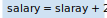
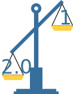

Central Processing Unit (CPU) est le cerveau de l'ordinateur


Central Processing Unit (CPU) est le cerveau de l'ordinateur
Pourquoi binaire, pourquoi pas Quaternaire?


Toutes les données d'un ordinateur sont stockées dans des séquences de 0 et de 1.


L'organigramme est une présentation graphique d'un algorithme

Une variable est le nom d'une cellule de mémoire. Elle est dite "variable" car la valeur contenue dans la cellule peut changer. Chaque cellule de mémoire a une adresse.


Exercice : Dessinez un organigramme/flowchart pour échanger deux nombres

Example:
a = 39, b = 25
après échange:
a = 25, b = 39
Les opérateurs arithmétiques sont des opérateurs que vous reconnaîtrez dans l'usage quotidien.

| Opérateur | Exemple | Explications |
|---|---|---|
| = |
Assignation/Affectation | |
| + |  | Addition/Concaténation |
| - | Soustraction | |
| * | Multiplication | |
| / | Division | |
| % | Modulo, reste de la division entière |


Exercice: Calcule le salaire mensuel si ton salaire brut en tant que développeur est de 32000€ par an (réaliste dans la région de Toulouse après la formation). Le salaire net est d'environ 75% du salaire annuel.
Dans la plupart des langages de programmation, si vous utilisez l'opérateur sur des chaînes de caractères, il les joint en ajoutant la deuxième à la première. Nous garderons le même comportement pour l'organigramme


Un tableau (array) est une collection ordonnée de valeurs. Chaque valeur est appelée un élément, et chaque élément a une position numérique dans le tableau, appelée son index.


| Operator exemple | Illustration | Résultat |
|---|---|---|
| 1 < 2 |  |
True |
| 2.0 >= 1 |  | True |
| Operator exemple | Illustration | Résultat |
|---|---|---|
| 2.0 == 2.0 |  |
True |
| 2.0 != 2.0 | |
False |

Il existe trois opérateurs d'expression booléenne dans la plupart des langues de programmation
| Operator | Description | Exemple |
|---|---|---|
| && | Retourne Vrai si les deux déclarations sont vraies | x < 5 && x < 10 |
| || | Renvoie Vrai si l'une des déclarations est vraie. | x < 5 || x < 4 |
| ! | Inverse le résultat, renvoie Faux si le résultat est vrai. | !(x < 5 && x < 10) |

| A | B | RESULT |
|---|---|---|
| 0 | 0 | 0 |
| 0 | 1 | 0 |
| 1 | 0 | 0 |
| 1 | 1 | 1 |

L'opérateur not s'applique à une seule condition. Et il inverse le résultat de cette condition, True devient False et False devient True.
| a | ! a |
|---|---|
| True | False |
| False | True |

| A | RESULT |
|---|---|
| 0 | 1 |
| 1 | 0 |

Lorsque vous mélangez des opérateurs logiques dans une expression, la plupart des langages de programmation les évaluent dans l'ordre appelé "précédence des opérateurs".
L'exemple suivant montre la préséance des opérateurs !, &&, et || :
| Operator | Prédominance |
|---|---|
| ! | Haut |
| && | Moyen |
| || | Faible |

Ce chapitre présente l'Opération conditionnelle, qui est la principale instruction utilisée pour sélectionner des actions alternatives en fonction des résultats des tests.


Nous pouvons imbriquer les opérations conditionnelle bien sûr


| A | B | RESULT |
|---|---|---|
| 0 | 0 | 0 |
| 0 | 1 | 0 |
| 1 | 0 | 0 |
| 1 | 1 | 1 |
| A | RESULT |
|---|---|
| 0 | 1 |
| 1 | 0 |
| A | B | RESULT |
|---|---|---|
| 0 | 0 | 1 |
| 0 | 1 | 1 |
| 1 | 0 | 1 |
| 1 | 1 | 0 |